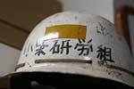
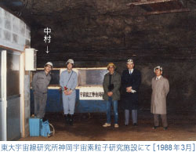
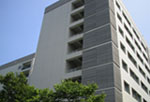
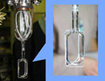

中村研究室の歴史
研究室誕生以前（～1991.3）
研究室の起源は，もとをたどれば中村が子供の頃まで遡るかと思いますが，長くなりますので余り昔のことはここでは割愛します。大きな転機のひとつは，素粒子物理学の実験的研究をやりたいと思っていた大学生時代，在籍していた大学にはその分野の研究室がありませんでしたが，素粒子理論を専門とするＩ教授が東大の大学院の研究室への進学を勧めて下さったことです。それが後にノーベル賞を受賞し有名になった小柴昌俊先生の研究室でしたが，私は当時，そんなに大きな成果が待ち受ける研究室とは予想だにしていませんでした。  小柴研では当時，ドイツのDESY研究所のPETRAという電子陽電子衝突型円形加速器で，国際協力によるJADE実験を行なっていました。その一方，国内では大統一理論（GUT）の検証を目的として，陽子崩壊の探索実験と超重磁気単極子の探索を共に岐阜県の神岡鉱山で準備していました。私は，当初から，小柴先生の一番弟子であるＯ先生のもとで超重磁気単極子探索の実験に加わりました。修士の２年からは書類上もＯ先生を指導教官に変更して小柴グループのもとで研究に従事しましたが，このＯ先生はタウレプトンの発見を運がなくて逃し，ノーベル賞に届かなかったことを後に知りました。
 小柴グループの思い出としては様々な話が限りなくあります。先生方は恐い人が多かったですが，常に夢のある大きなテーマを当たり前のように追い求めて前向きであったことは忘れられません。社会への責任を自覚しつつ，しっかりした目標を持ってパイオニア的な研究に教官も院生も共にまい進していて，まかり間違っても最終目標がはっきりしないテーマを漫然と行なうような姿勢はまったくありませんでした。この時代に，基本的な研究姿勢を得たと私は思っています。
小柴グループで博士課程まで院生生活を送った後，私は東大宇宙線研究所で１年間の研究員となり，続いて再び東大理学部に戻って日本学術振興会特別研究員として２年間の研究生活を送った後に，縁あって横浜国立大学教育学部に助手として就職しました。
教育学部に誕生（1991.4～1997.9）
中村が本学教育学部物理学教室に就職した1991年４月，本研究室は誕生しました。事前の予想とは異なり，最初から一研究室を任されて運営することとなりましたが，与えられた部屋にはドライバー１本無い，がらんとした状態で，しかも運営のための校費も極めて乏しく，ずいぶんと苦労がありました。しかし，そんな中でも，それまでに携わってきた研究テーマを共同研究で継続することから始めて研究室の立ち上げを進めました。むしろ，そのような困窮の時代に育った学生は，その後もたくましく育つ傾向があるのは興味深いことです。立ち上げ時のテーマとしては，中村が院生時代から長く関わってきた地下での超重粒子の探索実験（東大，早稲田大学，日本大学との共同実験）を行っていましたが，徐々に個性を発揮して新たなテーマを追い求めるようになりました。それらは，以下のようなものでした。
- 高エネルギー加速器研究機構を中心に準備が進められている電子陽電子衝突型線形加速器（ILC）実験のための加速器の開発
- 加速器では生成困難な，宇宙初期に創られたかもしれない超重粒子の気球高度での探索
- パウリの排他律の破れの探索
- 大地震に伴う電磁気現象の観測プロジェクト（阪神大震災の直後）
- 鉱物からの微量放射線の測定
- 有限要素法を用いた山体崩壊地形の考察

以上のテーマは，その時々のご時勢と学生の皆さんの多様な興味に従って，臨機応変かつ大胆に多種多様な様々なテーマを選んできました。これらの経験が，かけがえのない貴重な蓄積となって今の研究室があると言っても過言ではありません。
工学部の研究室として（1997.10～）
 1997年の10月，大学の改組にともない，中村研究室は他のいくつかの研究室と共に教育学部から工学部に移りました。そして，1998年４月からは新しく誕生した知能物理工学科の学生の指導を開始して，2001年度より同学科の４年生を研究室に受け入れるようになりました。ちょうどその前後から，以前の共同研究者から新しい実験計画への参加を求められることが続きました。早稲田大学の道家先生からは，宇宙線超重核観測計画（HNX／ECCO）への参加を，また小柴研時代の同級生であった東大宇宙線研究所の中畑氏からは，液体キセノンを大規模に用いる神岡鉱山での実験計画（XMASS）に誘われ，それぞれ自分たちに出来ることを具体的かつ独自のテーマを選んで取り組むこととなったのです。
 HNX／ECCOの研究では，それまで扱った経験のなかったBP-1ガラス飛跡検出器や，キセノンエキシマランプを扱うこととなり，特にランプの発する真空紫外光（λ＜190nm）のことを勉強できました。これは，液体キセノンを扱うXMASS実験に関係する研究へとつながりました。また，BP-1ガラス飛跡検出器の研究はＸ線コリメータの開発やＸ線CCDの研究へと発展していったのです。